Configuration File¶
Skim's configuration lives in a single YAML file. YAML was chosen over JSON because it tolerates comments, optional quoting, and trailing-comma slips — small ergonomic wins that matter when a non-developer is hand-editing the file from a tutorial.
The file is hierarchical and every field is optional. Skim fills in
sensible defaults for anything you leave out, so a working configuration can
be as short as a single keyboard.layers list. The full schema is large only
because it lets you fine-tune nearly every visual element.
You point Skim at a config with the --config <path> flag (see
Command Line Options). If you'd rather generate or edit the
file interactively, see the Configurator UI.
Note
How to read this reference. Headings in `code style` name a literal
YAML field — the heading ### `keymap_title` documents the entry you
write as keymap_title: in your config. Plain-text headings (like
"Top-level structure" or "Key Label Resolution algorithm") name an
organisational subsection or describe an algorithm, not a configuration
field.
Top-level structure¶
The file has three top-level sections:
| Section | What it controls |
|---|---|
keyboard |
Physical hardware features and per-layer metadata. |
keycodes |
How QMK keycodes are transformed and labelled on keys. |
output |
Image dimensions, colors, borders, legends, and styling. |
A minimal file looks like:
A complete reference file with every section populated lives at
samples/config/skim-config.yaml
in the repository.
keyboard¶
Describes the hardware variant you're rendering and gives each layer in the keymap a human-readable identity.
Current schema:
features¶
A bag of hardware-feature toggles. Today there's only one knob, but the sub-section exists to keep room for future hardware variants without breaking the schema.
Current schema:
double_south¶
| Type | Default |
|---|---|
boolean |
false |
Whether the finger clusters render the double-south (DS) key positions. Set
to true only if your physical keyboard has these extra southern switches.
On a stock Svalboard build, leave it false — those positions will be
hidden in the output.
double_south: falsedouble_south: truelayers¶
A list of layer descriptors. The list does two unrelated jobs at once, and it helps to keep them separate when reading the rest of this section:
- Order of the list controls how layers stack in the overview image. The first entry renders on the bottom row and the last on the top, so reading the list top-to-bottom corresponds to reading the overview bottom-to-top. This is intentional: layer 0 is conventionally the base layer, and stacking it at the bottom matches how most users think about layer "depth."
indexfield on each entry is the layer's QMK firmware index — the slot the layer occupies in the compiled binary, and the integer that keycodes likeMO(...),LT(...), andTG(...)target.
List position and firmware index are independent. You can list a layer first
and give it index: 14 if your firmware skips middle slots — useful for Vial
and Keybard keymaps that can populate non-sequential layers like 0, 1, 2, 14,
15.
Current schema:
Each entry has these fields:
index¶
| Type | Default | Range |
|---|---|---|
integer |
— | 0–31 |
The QMK firmware layer index — what the binary firmware ends up with after qmk
compile, and what LT(...) / MO(...) / TG(...) keycodes target. If this
doesn't match what's actually programmed into your firmware, layer-switching
keys will point at the wrong layer in the rendered image.
The range matches QMK's stock MAX_LAYERS of 32. The Configurator UI enforces
0–31; the YAML schema itself doesn't bound the value, so hand-edited config
files can technically set higher indices, but the renderer and the default
color generator are calibrated for 0–31.
This value is used in the "Overview" keymap and on the "Layer Indicators" to represent the layers defined in your keymap.

name¶
| Type | Default |
|---|---|
string |
— |
The full descriptive name shown as the title of the per-layer image and as the layer's row label in the overview. Long names are fine — the overview sizes them automatically.

When no name is provided, Skim simply uses the word LAYER followed by the QMK firmware layer index.
id¶
| Type | Default |
|---|---|
string | null |
null |
An optional alphanumeric handle for this layer, used when your keymap
references layers by C #define macros (the form qmk c2json produces). If
your LT(...) / MO(...) arguments use literal integers, you don't need this.
If they use #defined names like _BASE or _NAV, set id: "_BASE" so Skim
can resolve them back to the firmware index.
Note
This option has no visual impact in the final image, but is required to produce an image with the correct connections between layers.
variant¶
| Type | Default |
|---|---|
string | null |
null |
A short secondary label rendered below the layer name in the overview
image — typically used to tag the keymap variant ("QWERTY", "COLEMAK",
"DVORAK"). Leave null to not display any text below the layer name.

keycodes¶
Customizes how Skim turns raw QMK keycode strings into the labels that appear on rendered keys, plus metadata for macros, tap-dances, and the legends Skim emits.
Current schema:
keycodes:
pre_process:
- keycode: <string>
target: <string>
- ...
overrides:
- keycode: <string>
target: <string>
- ...
macros:
- id: <string>
name: <string>
preview: <string>
- ...
tap_dances:
- id: <string>
name: <string>
preview: <string>
- ...
symbol_legend_aliases:
<KEY_CODE>: <TARGET_KEY_CODE>,
...
symbol_descriptions:
<CATEGORY>:
<KEY_CODE>: <DESCRIPTION>,
...
...
function_descriptions:
<CATEGORY>:
<FUNCTION_NAME>: <DESCRIPTION>,
...,
...
The pipeline that produces a key's label runs in this order:
pre_processrewrites the input keycode string before any resolution happens. Think of this step as a plain search-and-replace pass that runs before Skim looks anything up.- Skim's bundled keycode-to-label table turns the (possibly rewritten)
keycode into a label. The bundled table is internal to Skim, but its
entries follow the exact same shape as
overridesbelow — what you can write inoverridesis the same kind of thing Skim writes in the bundled table. overrideshas the final word: it can replace the resolved label with anything you like, and entries here win against the bundled table.
pre_process¶
| Type | Default |
|---|---|
list of {keycode, target} |
[] |
Use this to normalise non-standard keycodes so the standard resolver recognises them. A common case: a custom keycode in your firmware that behaves like a stock QMK construct. For instance:
After this rule, every appearance of MY_CUSTOM_KEY in the keymap is
treated as MT(MOD_LCTL,KC_A), which the bundled resolver knows how to
render.
Note
pre_process rules are textual substitutions that happen before label
resolution, so they should not rely on alias-resolution features in keycode
strings. Use plain canonical QMK syntax in the target.
overrides¶
| Type | Default |
|---|---|
list of {keycode, target} |
[] |
Force the rendered label for a specific keycode, regardless of what the default
mapping produces. Common uses: spelling words out (KC_SPC → "Space"),
choosing a glyph (KC_ENT → "⏎"). For instance:
The target field is always processed by the Key Label Resolution
algorithm, which allows you to create a rich
graphic set of key code symbols without repeating yourself.
macros¶
| Type | Default |
|---|---|
list of {id, name, preview} |
[] |
Metadata for QMK macros. Each entry binds a macro identifier to a friendly name that Skim uses in the macros legend table on generated images.

id¶
| Type | Default |
|---|---|
string |
— |
The string used to reference this macro in your keymap. For Vial and Keybard
keymaps that's one of the standard slot names (M0, M1, …, M49); for
QMK keymap.c keymaps it's the name you used in your #define (e.g.
MY_MACRO for MACRO_MY_MACRO).
name¶
| Type | Default |
|---|---|
string | null |
null |
A short human-readable label shown in the macros legend. This field is Skim-only — it has no equivalent in Vial or Keybard, so changes here don't round-trip back to your keyboard's firmware.
preview¶
| Type | Default |
|---|---|
string | null |
null |
A read-only single-line text representation of the macro, displayed below
the macro's name in the legend. Although saved in the configuration file,
this field is not intended for hand-editing. To regenerate it, run the
Configurator UI with the -k / --keymap option pointed at your keymap
file — Skim will read the macro definition from the keymap and refresh the
preview.
tap_dances¶
| Type | Default |
|---|---|
list of {id, name, preview} |
[] |
Like macros, the tap_dances field carries metadata for QMK tap-dance
keys. Each entry binds a tap-dance identifier to a friendly name that Skim
uses in the tap-dance legend table on generated images.

id¶
| Type | Default |
|---|---|
string |
— |
Must match the tap-dance index supplied to QMK's TD(...) macro: one of
TD(0), TD(1), TD(2), …, TD(49).
Skim's internal pre_process table also rewrites these calls to plain
identifiers (TD(0) → TD0, TD(1) → TD1, …, TD(49) → TD49) — that
mapping isn't a QMK standard, but it lets Skim render specific keymap.c
styles that reference the tap-dance by an unwrapped name.
name¶
| Type | Default |
|---|---|
string | null |
null |
A short human-readable label shown in the tap-dance legend. Like
macros.name, this field is Skim-only — it has no equivalent in Vial or
Keybard, and changes don't round-trip back to your firmware.
preview¶
| Type | Default |
|---|---|
string | null |
null |
A read-only single-line text representation of the tap-dance, displayed
below its name in the legend. Although saved in the configuration file,
this field is not intended for hand-editing. To regenerate it, run the
Configurator UI with the -k / --keymap option pointed at your keymap
file — Skim will read the tap-dance definition and refresh the preview.
symbol_descriptions¶
| Type | Default |
|---|---|
{category: {keycode: description}} |
{} |
Per-keycode description overrides for the symbol legend. The legend ships with a curated default table; entries here either override an existing keycode within a bundled category or add brand-new categories.
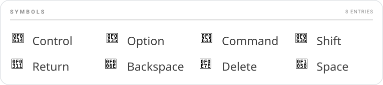
keycodes:
symbol_descriptions:
Modifiers:
KC_LEFT_CTRL: "Control (my custom label)"
"My Section":
MY_KEY: "Does the thing"
User keys in an existing bundled category take precedence over the bundled description for the same keycode. Brand-new categories are appended after the bundled ones in the legend.
function_descriptions¶
| Type | Default |
|---|---|
{category: {keycode: description}} |
{} |
Per-function description overrides for the function-keycode legend — the
table that explains constructs like MO, LT, OSL, OSM, TG, and
TT. Same shape and merge rules as symbol_descriptions: user keys
override bundled entries within a category, and new categories are
appended after the bundled ones.
Placeholders¶
Description strings support a small substitution syntax that lets the text reference the function's arguments and pull in other keycode glyphs:
| Token | Meaning |
|---|---|
#N; |
The Nth argument, rendered as a literal # character. Use when you want to say "an arg goes here" without showing its actual value. |
@N; |
The Nth argument, recursively resolved to its rendered label. Triggers per-instance mode (see below). |
@@KEYCODE; |
An alias reference — replaced by the resolved label of KEYCODE. Lets a description embed a glyph that's already named in the bundled keycode table. |
\|; |
The tap/hold separator character (the box-drawing │). Rare in descriptions; appears mostly in keycode aliases. |
Generic vs per-instance entries¶
Whether a description produces one legend row per function or one
per unique call depends entirely on whether it contains an @N;
placeholder. Skim flips automatically based on the description text.
-
Generic (no
@N;): one row in the legend per function name, shared across every call site in the keymap. Both#N;and any@N;that would have appeared collapse to a literal#.Whether your keymap uses
MO(0),MO(1), orMO(14), the legend shows a singleMOrow reading "Hold to layer #". -
Per-instance (at least one
@N;): one row per unique(function, args)tuple that appears in the keymap. Each@N;slot is replaced with the recursively-resolved label of the actual argument.A keymap that uses both
OSM(MOD_LCTL)andOSM(MOD_LSFT)will show two rows: "One-shot ⌃" and "One-shot ⇧".
You can mix #N; and @N; in the same description. Any single @N; is
enough to flip the description into per-instance mode; #N; then keeps
its "literal #" meaning inside each per-instance row.
Note
The bundled descriptions use #N; for layer functions (MO, OSL,
LM, etc.) so every layer-switch keycode in your keymap shares a
single legend entry. Override the bundled entry with @N; if you'd
rather see one row per unique layer destination.
symbol_legend_aliases¶
| Type | Default |
|---|---|
{keycode: canonical_keycode} |
{} |
Tells the symbol legend to render two keycodes as a single combined entry sharing the legend description of the canonical one. Handy when your keymap uses left/right variants of the same conceptual key and you don't want each to occupy a separate row.
You don't need to list every alternative spelling for keycodes. Skim
resolves legend aliases transitively through the @@KEYCODE; chain in the
bundled keycodes table — when it looks up a keycode, it walks every rung of
that chain and checks symbol_legend_aliases at each step. As long as one rung
is aliased, every spelling that already chains to it follows along
automatically.
For example, the bundled table chains KC_RCTL → @@KC_RIGHT_CTRL;. So
a single user alias is enough:
…and KC_RCTL, KC_RIGHT_CTRL, and any other short-form that resolves
to KC_RIGHT_CTRL all collapse onto the KC_LEFT_CTRL legend row. You
only have to alias the names that aren't already covered by the
bundled chain.
Key Label Resolution algorithm¶
Several of the configuration options in keycodes produce labels through
Key Label Resolution — a small recursive substitution pass Skim runs
on every label string. It lets a key's displayed symbol be composed from
one or more of:
- A glyph from the Nerd Fonts package
- Any printable character supported by the fonts Skim uses
- A reference to another key's resolved label, expanded inline
By the time this algorithm runs, the keycode has already been
pre-processed (step 1 of the keycodes pipeline above), and any user
overrides have already been merged into Skim's bundled keycode-to-label
table. Key Label Resolution is step 2 of the pipeline — the
resolver against that merged table.
When a key's label needs to resolve to a final string, Skim walks these steps in order. Each step's output becomes the next step's input.
-
Branch on shape — the keycode is matched against the regex
^[A-Z0-9_]+\(.+\)$:- Function call (
FUNC(args)) whereFUNCexists in the bundledmacro_functionstable → go to step 2. - Atomic keycode (no parens, or
FUNCnot inmacro_functions) → skip to step 4.
- Function call (
-
Expand the macro template — Skim looks up
FUNCinmacro_functionsand parses the arguments (respecting nested parentheses, soMT(MOD_LCTL, KC_A)produces["MOD_LCTL", "KC_A"]). The template string is then walked left-to-right, replacing every placeholder it contains:Placeholder Substituted with \|;The tap/hold separator character │(U+2502).#N;The Nth argument inserted verbatim. Used in templates whose displayed text is a layer index, e.g. MO,LT.@N;The Nth argument recursively resolved as a keycode — the argument is fed back to step 1 of this algorithm, and its final label is spliced in. @@KEYCODE;Resolved in step 3, after the placeholders above. For layer-switching functions (
DF,PDF,MO,LM,LT,OSL,TG,TO,TT), Skim also reads the layer argument and stores its numeric index on the resultingSvalboardTargetKeyso the renderer can paint a layer-indicator circle. If the argument is a string identifier (e.g.MO(_NAV)), Skim looks it up inkeyboard.layers[*].idto find the firmware index — that's the layer the indicator points at, separate from what the displayed label shows. -
Resolve
@@KEYCODE;aliases — the partially-expanded label is scanned for@@KEYCODE;patterns. Each one is replaced with the recursively-resolved label of the referenced keycode (back to step 4 on that keycode). Avisitedset guards against circular references — encountering the same keycode twice in the same chain raises aValueErrorrather than looping forever. -
Atomic keycode lookup — Skim looks up the keycode in the merged
keycodestable (bundled entries with useroverridesalready applied).- If the table has an entry, its value becomes the label string. If
the value contains any
@@KEYCODE;references, those are resolved via step 3. - If the table has no entry, the keycode name itself is used as the
label (graceful degradation — better to print
KC_FOO_NEWthan to drop the key entirely).
- If the table has an entry, its value becomes the label string. If
the value contains any
-
Collapse empty dual labels — for function-resolved labels, if one side of the tap/hold separator resolved to an empty string (which happens when an arg like
KC_NOresolves to""), the separator is dropped so dual-label keys with one empty side render as a clean single label.
After resolution, the rendered label is a string that may still contain
%%nf-md-…; (or %%nf-fa-…;, etc.) Nerd Font glyph tokens. Those tokens
are not part of Key Label Resolution — they pass through verbatim
and are substituted with their corresponding glyph characters at the
later text-rendering stage by the rich-text layer.
Note
Step 2's @N; placeholder is what makes the algorithm recursive: a
nested keycode like LT(1, LSFT(KC_1)) resolves the outer LT first,
hits @1; for the second arg LSFT(KC_1), and feeds that back into
step 1 — which itself runs through function expansion and alias
resolution before returning a label that gets spliced into the outer
template.
Note
Skim ships these open source fonts bundled as companion assets for you to use:
- Roboto:
- Thin (
Roboto-Thin.ttf) - Regular (
Roboto-Regular.ttf) - Black (
Roboto-Black.ttf)
- Thin (
- Symbols Nerd Font (
SymbolsNerdFont-Regular.ttf) - DejaVu Sans Condensed (
DejaVuSansCondensed.ttf) - JetBrains Mono Nerd Font Mono (
JetBrainsMonoNerdFontMono-Regular.ttf) — used by the Configurator UI's screenshot pipeline.
If these fonts support the glyph you're trying to use, Skim will render your key without major problems.
output¶
Controls everything visual: image dimensions, layer colors, borders, fonts, which legends to draw, and the relative scale of standalone tables.
Current schema:
Skim is configured to layout the keymap elements proportionally everywhere. Although opinionated, the design decisions regarding spacing and typography follow a small set of rules to create a consistent image; that being said, you're free to override these decisions.
The next sub-sections will explain in details how each field affect the output of your keymap.
keymap_title¶
| Type | Default |
|---|---|
string | null |
null |
Your keymap layout title. This name will be used as the title of each keymap
image created by Skim. If you don't set this property (or set it to null), an
auto-generated name will be used instead. The name is derived from the keymap
file name used to create the images.
copyright¶
| Type | Default |
|---|---|
string | null |
null |
An optional copyright notice rendered in the footer area of the keymap images.
Leave null to omit it. Standard conventions apply ("© 2026 Your Name");
Skim does not enforce a format.
layout¶
Image dimensions and whitespace.
Current schema:
width¶
| Type | Default |
|---|---|
float |
1600 |
Total image width in SVG units (effectively pixels at the default scale). The image height is computed automatically to preserve the Svalboard aspect ratio, so you only specify width.
Increase this for prints/documentation that need extra detail; decrease for thumbnails or sharing on width-constrained platforms.
Important
width is the driving value for every other layout metric in the
system. By default, every spacing, padding, and stroke in the rest of
this section is stored as a proportion of width — so doubling
width doubles every gap, every chip's stroke, and every margin in
lockstep. The image rescales as a whole and its visual rhythm stays
intact.
The only way to opt a single value out of this proportional scaling
is to give it an absolute number (any value ≥ 1.0, see the
magnitude rule on each field). Absolute values stay fixed in SVG
units regardless of width, which is occasionally what you want
(e.g. pinning a 2-pixel border on every render size) but means you
own the consequences on smaller / larger canvases.
spacing¶
Every gap, padding, and inset Skim paints is configurable here. Skim
ships with sensible defaults — every field accepts null to keep the
default — but each one can be overridden in three forms that all
follow a single magnitude rule:
| Form | Example | Meaning |
|---|---|---|
Float < 1.0 |
0.025 |
Proportion of the field's base (usually doc width). |
Float ≥ 1.0 |
40 |
Absolute SVG units (independent of doc width). |
String "N%" |
"2.5%" |
Shorthand for the proportion form (N / 100). |
null (default) |
null or omit |
The field's built-in default proportion. |
Most fields scale to the document width (output.layout.width).
Two cluster-internal fields (finger_key_gap, thumb_key_gap) scale
to the cluster's own width so they stay proportional regardless of
how the keyboard is sized inside the canvas. Each field below states
its base.
Current schema:
output:
layout:
spacing:
# Document chrome
margin: <float | "N%" | null>
inset: <float | "N%" | null>
column_gap: <float | "N%" | null>
# Section / table rhythm
section_spacing: <float | "N%" | null>
section_title_rule_gap: <float | "N%" | null>
table_header_spacing: <float | "N%" | null>
table_col_spacing: <float | "N%" | null>
table_row_spacing: <float | "N%" | null>
# Cluster geometry
finger_key_gap: <float | "N%" | null>
thumb_key_gap: <float | "N%" | null>
layer_indicator_spacing: <float | "N%" | null>
# Chip / pill / badge internals
chip_padding: <float | "N%" | null>
tap_dance_pill_padding: <float | "N%" | null>
macro_action_inset: <float | "N%" | null>
layer_badge_inset: <float | "N%" | null>
In every illustration below, the rose-red highlight marks the value the field controls; everything else is greyed out so the value reads at a glance.
margin¶
| Type | Default | Base |
|---|---|---|
float | string | null |
null (→ 0) |
doc width |
The outer margin between the image edge and the rounded keyboard
border. null and 0 are equivalent — the keyboard sits flush
against the image edge.
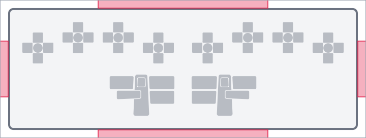
inset¶
| Type | Default | Base |
|---|---|---|
float | string | null |
null (→ 2.5% of doc width) |
doc width |
The inner padding inside the keyboard border. Used both as the gap between the border line and the first content row, and as the inter-element gap between stacked sections (clusters, legends, footer) inside the document column.
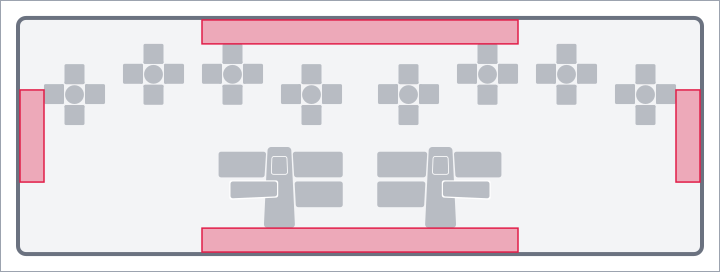
column_gap¶
| Type | Default | Base |
|---|---|---|
float | string | null |
null (→ 2.5% of doc width) |
doc width |
Horizontal gap between side-by-side columns of content — between the two halves of the keyboard, and between the macros and tap-dance sections when both are rendered.
section_spacing¶
| Type | Default | Base |
|---|---|---|
float | string | null |
null (→ 1.5% of doc width) |
doc width |
Vertical gap between a section's title strip (the MACROS / TAP-DANCE
header rule) and the section body that follows it.
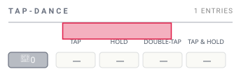
section_title_rule_gap¶
| Type | Default | Base |
|---|---|---|
float | string | null |
null (→ 0.56% of doc width) |
doc width |
Vertical breathing room between the title text and the rule line below
it inside a section title strip. The strip is top-anchored: the title
sits at the strip's top edge, the rule sits section_title_rule_gap
units below the title's bottom edge, and that defines the strip's
total height.
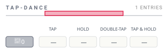
table_header_spacing¶
| Type | Default | Base |
|---|---|---|
float | string | null |
null (→ 0.75% of doc width) |
doc width |
The "header to content" gap inside any table-shaped composable. Used in three places that all share the same rhythm:
- Tap-dance column header (
TAP / HOLD / DOUBLE-TAP / TAP & HOLD) → the first row's variant cells. - Tap-dance / macro chip → its body content (variant cells, pill row).
- Named-macro header strip (chip + name + rule) → the macro's pill row below it.
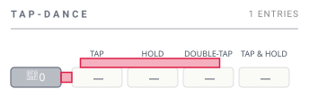
table_col_spacing¶
| Type | Default | Base |
|---|---|---|
float | string | null |
null (→ 0.375% of doc width) |
doc width |
Horizontal gap between adjacent columns inside a table — the four tap-dance variant cells in a row, and the action pills inside a macro pill row.
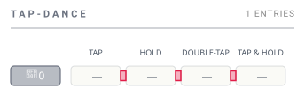
table_row_spacing¶
| Type | Default | Base |
|---|---|---|
float | string | null |
null (→ 0.56% of doc width) |
doc width |
Vertical gap between adjacent rows inside a table.
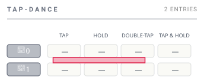
finger_key_gap¶
| Type | Default | Base |
|---|---|---|
float | string | null |
null (→ 1.8%) |
finger cluster width |
Gap between the center key and the four outer keys (N / E / S / W) inside a finger cluster. This is the visible space that surrounds the center key's cross. Scales to the cluster's width, not the doc width, so the geometry stays proportional however the cluster gets sized.
thumb_key_gap¶
| Type | Default | Base |
|---|---|---|
float | string | null |
null (→ 3.8%) |
thumb cluster width |
Vertical breathing room above each of the four outer thumb keys (pad, nail, up, knuckle). Thumb clusters tessellate rather than gap — the keys overlap by half this value at their seams — so a clean inter-key rectangle doesn't exist; the highlighted bands sit directly above each outer key. Scales to the thumb cluster's own width.
layer_indicator_spacing¶
| Type | Default | Base |
|---|---|---|
float | string | null |
null (→ 0.75% of doc width) |
doc width |
Distance between an outer key's edge and its layer-indicator badge — the small colored circle showing the layer this key switches to. Doc-width-relative on purpose: finger and thumb clusters share the same gap, so indicators read at a uniform visual weight regardless of cluster sizing.
chip_padding¶
| Type | Default | Base |
|---|---|---|
float | string | null |
null (→ 1.25% of doc width) |
doc width |
Symmetric horizontal inset inside any chip-shaped element: the
named-macro / tap-dance chip outline. Acts as the leading and trailing
padding around the chip's name text. Vertical padding inside the chip
is derived as chip_padding * 0.25, so the chip's height adjusts
in step with horizontal changes.
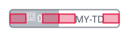
tap_dance_pill_padding¶
| Type | Default | Base |
|---|---|---|
float | string | null |
null (→ 1.25% of doc width) |
doc width |
Symmetric horizontal inset inside a tap-dance variant cell (the small
pill that carries one of TAP / HOLD / DOUBLE-TAP / TAP & HOLD).
Vertical padding is tap_dance_pill_padding * 0.25.
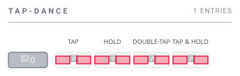
macro_action_inset¶
| Type | Default | Base |
|---|---|---|
float | string | null |
null (→ 0.625% of doc width) |
doc width |
Uniform inset for all three positions inside a macro action pill:
- Pill edge → action icon centre.
- Action icon → label text.
- Label text → pill edge.
A single value drives all three so the pill's internal rhythm stays consistent.
layer_badge_inset¶
| Type | Default | Base |
|---|---|---|
float | string | null |
null (→ 0.94% of doc width) |
doc width |
Leading horizontal inset inside the overview's layer badge — the gap
between the badge edge and the start of the layer index. The trailing
inset (gap between the layer name and the badge's right edge) is
derived as layer_badge_inset * 2, weighted heavier so the right
edge reads as breathing room rather than crowding the next column.
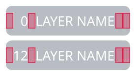
style¶
The largest sub-section. Every visual switch, stroke width, and color knob lives here. Configurable values are grouped by the conceptual component they configure rather than dumped as flat siblings — visibility flags live alongside the stroke widths and other styling that affect the same element.
Current schema:
output:
style:
# Standalone style switches
hold_symbol_position: <"qmk" | "inward" | "outward">
use_layer_colors_on_keys: <boolean>
use_system_fonts: <boolean>
show_transparent_fallthrough: <boolean>
# Object-shaped configs
border:
... # see output.style.border below
overview:
... # see output.style.overview below
layer_indicator:
... # see output.style.layer_indicator below
legend_tables:
... # see output.style.legend_tables below
strokes:
... # see output.style.strokes below
palette:
... # see output.style.palette below
hold_symbol_position¶
| Type | Default | Allowed values |
|---|---|---|
string |
"outward" |
"qmk", "inward", "outward" |
For hold-tap keys (LT, MT, etc.) Skim splits the key visually into the
"hold" portion and the "tap" portion. This setting controls which side of
the split each portion goes on:
"outward"— the hold side faces outward from the cluster's centre. Left-hand keys put hold on the left, right-hand keys put hold on the right. Reads naturally because the "modifier-ish" hold action ends up on the outer edge of the keyboard."inward"— the mirror of the above. Hold faces the cluster centre; tap faces the outer edge."qmk"— uses the argument order QMK macros define. Since QMK always lists hold first and tap second (e.g.,LT(layer, key)), this mode draws hold on the left and tap on the right regardless of which side of the keyboard the key is on.
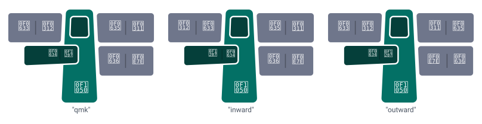
use_layer_colors_on_keys¶
| Type | Default |
|---|---|
boolean |
true |
When true, layer-switching keys (the keys that activate or hold a layer)
get tinted using the activating layer's color from palette.layers. When
false, every key uses the standard neutral background regardless of the
layer it activates. Useful when you want a more uniform look or when you
prefer to encode layer membership only in the badge column of the
overview.
true, layer 2's color paints the key; with false, the key falls back to neutral.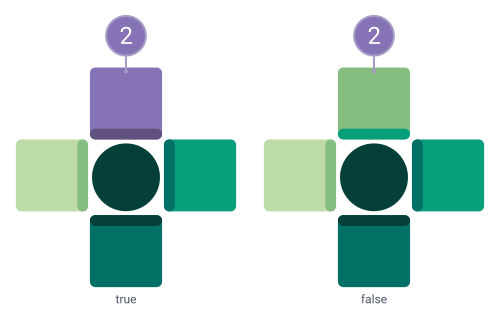
use_system_fonts¶
| Type | Default |
|---|---|
boolean |
false |
When false (default), the SVG embeds the bundled fonts so the rendered
image looks identical on every machine. When true, the SVG references
system fonts by name — the file is smaller and may pick up your system's
preferred typefaces, but viewers without those fonts installed will see a
fallback.
show_transparent_fallthrough¶
| Type | Default |
|---|---|
boolean |
true |
When true, transparent keycodes (KC_TRNS / _______) on layers above
0 render the label from layer 0 in a faded "ghost" color, so you can see
what's underneath. Set to false to stamp the Vial-style ⛛ glyph on
each transparent position instead, so transparent keys stay visible
without revealing the underlying layer-0 label.
true, the layer-0 label paints in a lightness-shifted variant of the key's color; with false, the key carries the ⛛ transparent-key glyph in the same ghost color.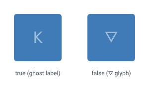
border¶
Configures the rounded rectangle border drawn around the entire keyboard.
Set the whole border object to null to suppress the border.
width¶
| Type | Default | Base |
|---|---|---|
float | string |
2 |
doc width |
Stroke width of the border line. Accepts the same magnitude rule as
the spacings — a float < 1 is a proportion of the doc width, a
float ≥ 1 is absolute SVG units, and a "N%" string is the
proportion shorthand.
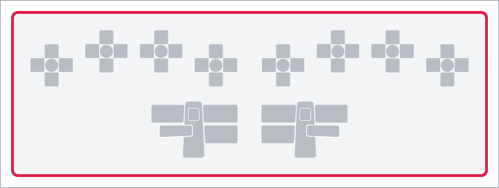
radius¶
| Type | Default |
|---|---|
float |
10 |
Corner radius for the rounded rectangle. Set to 0 for square corners.
overview¶
Controls how the multi-layer overview image stacks its per-layer
rows, where the (single) thumb-cluster row sits among them, and
which layer that thumb cluster is sourced from. Only affects the
overview image (-l overview); the per-layer images are unchanged.
Current schema:
output:
style:
overview:
layer_order: <"ascending" | "descending">
thumb_layer: <integer | null>
thumb_position: <"top" | "bottom" | "follow">
layer_connector:
... # see output.style.overview.layer_connector below
The thumb cluster reflects whichever layer thumb_layer names —
or, when left unset, the layer at the "anchor" end of the rendered
stack (last rendered for descending, first rendered for
ascending). thumb_position only changes the cluster's visual
location.
layer_order¶
| Type | Default |
|---|---|
"ascending" | "descending" |
"descending" |
Direction in which the overview stacks its per-layer rows.
"ascending": Layer 0 at the top, highest QMK index at the bottom. Reads "base layer first" — natural reading order if you think of layer 0 as the foundation and higher layers as additions."descending"(default, legacy behaviour): highest QMK index at the top, Layer 0 at the bottom. Reads "most-specialised first" — the topmost layer is the one most likely to be active when typing.
layer_order: descending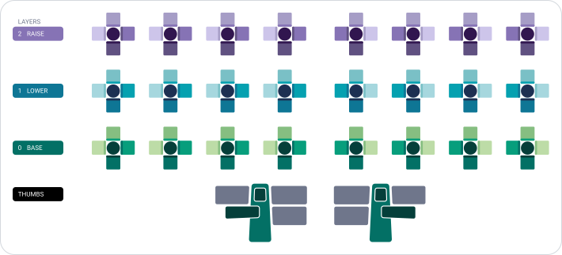
layer_order: ascending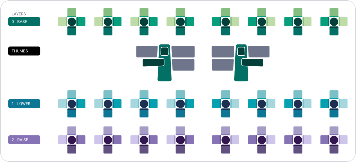
thumb_layer¶
| Type | Default |
|---|---|
integer | null |
null (resolved at render time) |
QMK layer index whose thumb cluster is rendered in the overview's THUMBS row.
When this field is null or omitted, the renderer picks the layer
at the "anchor" end of the rendered stack:
layer_order: descending→ the last rendered layer (the row at the bottom of the stack — typically the lowest QMK index in the keymap).layer_order: ascending→ the first rendered layer (the row at the top of the stack — typically the lowest QMK index in the keymap).
This makes the default work for any keymap, even one that doesn't
define QMK index 0 at all (e.g. a Vial config that only populates
layers 1, 2, 14). If you provide an explicit value but the
layer isn't in the keymap, the renderer falls back to the same
contextual default.
thumb_layer: 1 (with layer_order: ascending, default thumb_position: follow)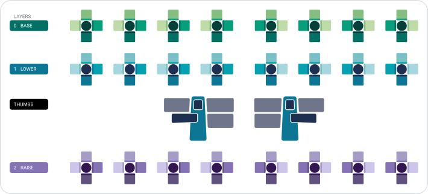
thumb_position¶
| Type | Default |
|---|---|
"top" | "bottom" | "follow" |
"follow" |
Where to place the THUMBS row in the rendered stack. The thumb cluster always reflects the keymap's first configured layer (typically QMK index 0); this option only changes its visual location.
"follow"(default): thumb row sits directly below the layer it represents, regardless of where that layer ends up in the stack. Withlayer_order: descendingthe base layer is already at the bottom, so the thumb lands there too — same as"bottom". Withlayer_order: ascendingthe thumb tucks under the base layer at the top of the stack instead."top": thumb row sits before every layer."bottom"(legacy behaviour): thumb row sits after every layer.
thumb_position: top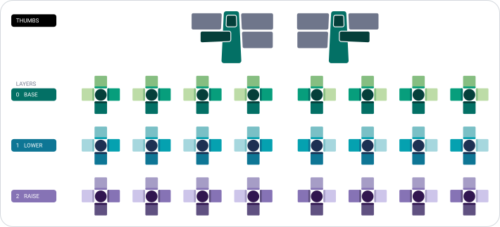
thumb_position: bottom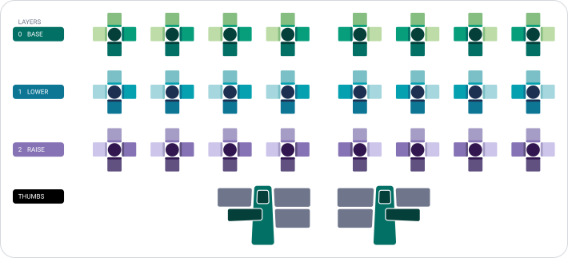
thumb_position: follow (with layer_order: ascending)
Note
The connector routing engine handles the thumb at any position — connectors that cross over the thumb row are routed via the right-column lane bank rather than overlapping the thumb cluster's chrome. Lane allocation grows the inter-row gaps as needed, so visually-adjacent rows that have many cross-layer connectors will sit further apart than rows that don't.
layer_connector¶
Configures the dotted connector paths painted in the keymap overview image — the lines linking each layer indicator circle to its corresponding key on the miniature keymap.
output:
style:
overview:
layer_connector:
show: <boolean>
width: <float | "N%" | null>
dot_spacing: <float | "N%" | null>
The two stroke / spacing fields follow the magnitude rule (< 1
proportion / ≥ 1 absolute / "N%" shorthand / null default).
show¶
| Type | Default |
|---|---|
boolean |
true |
Whether to draw connector paths in the overview at all. Set to
false for a cleaner overview that lets the badge column and the
miniature keymap stand on their own. Has no effect on per-layer
images (which never paint connectors).
true panel.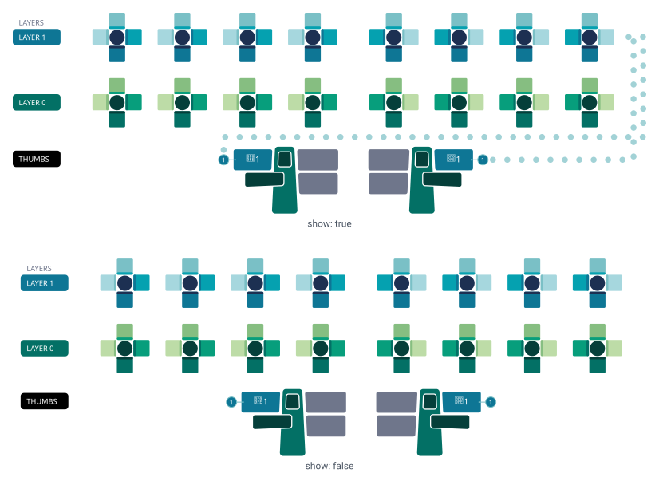
width¶
| Type | Default | Base |
|---|---|---|
float | string | null |
null (→ 0.27% of doc width) |
doc width |
Stroke width of the connector path. The default value is tuned to read clearly on the canonical 1600-unit overview image; bump it for larger canvases or when you want the connectors to dominate the overview's chrome more.
dot_spacing¶
| Type | Default | Base |
|---|---|---|
float | string | null |
null (→ 0.77% of doc width) |
doc width |
Gap between adjacent dots along the connector path. Controls the visible cadence of the dotted line — smaller values pack the dots tighter; larger values space them out so the line reads as a sparser trail.
layer_indicator¶
Configures the layer-indicator badges — the small colored circles
drawn next to layer-switch keys in each cluster, and the matching
badges in the overview's LAYERS column.
The gap between an outer key's edge and its indicator circle lives
on output.layout.spacing.layer_indicator_spacing
since it's a spacing value applied between two elements rather than
a property of the indicator itself.
show¶
| Type | Default |
|---|---|
boolean |
true |
Whether to draw layer-indicator badges. Each circle is tinted with
the destination layer's color, giving an at-a-glance hint of "where
does this key take me." Set to false to suppress them entirely
(both in clusters and in the overview's badge column).
true, a layer-tinted indicator badge sits above the key; with false, the badge is suppressed.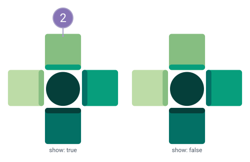
width¶
| Type | Default | Base |
|---|---|---|
float | string | null |
null (→ 0.125% of doc width) |
doc width |
Stroke width of the indicator circle outline.
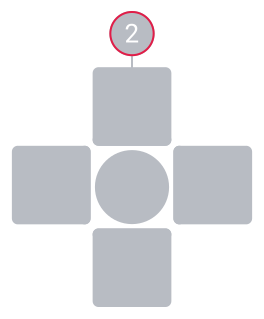
legend_tables¶
Configures the three legend tables Skim renders alongside the keymap: macros, tap-dances, and symbols. Each sub-block carries its own visibility flag and standalone-image body-scale multiplier; the symbols sub-block also carries a flow direction and column count unique to its multi-column layout.
output:
style:
legend_tables:
macros:
show: <boolean>
scale: <float>
tap_dances:
show: <boolean>
scale: <float>
symbols:
show: <boolean>
scale: <float>
flow: <"row" | "column">
columns: <integer | null>
The show flags toggle whether the corresponding legend appears
embedded in per-layer / overview images. The scale values
apply only to the standalone images (skim generate -l macros /
-l tap-dances / -l symbols); the chrome (title, footer, outer
padding) stays at the unscaled per-image size.
macros¶
Visibility and standalone-image scale for the macros legend.
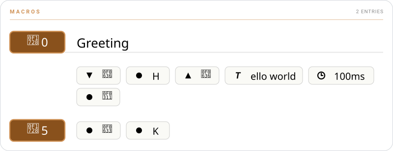
show¶
| Type | Default |
|---|---|
boolean |
true |
Whether to embed the macros legend in per-layer images and the
overview. The legend lists every macro referenced on the layer (or
across all layers, in the overview), with its name and preview
from keycodes.macros. Set to false to omit it.
scale¶
| Type | Default |
|---|---|
float |
1.5 |
Body-scale multiplier for the standalone macros image. Body chips and pills scale by this factor; the per-image chrome stays unscaled.
tap_dances¶
Visibility and standalone-image scale for the tap-dances legend.
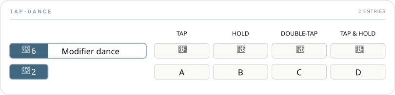
show¶
| Type | Default |
|---|---|
boolean |
true |
Whether to embed the tap-dances legend in per-layer images and the
overview. Mirrors macros.show.
scale¶
| Type | Default |
|---|---|
float |
1.5 |
Body-scale multiplier for the standalone tap-dances image. Same
semantics as macros.scale.
symbols¶
Visibility, standalone-image scale, and multi-column flow for the symbol legend.

show¶
| Type | Default |
|---|---|
boolean |
true |
Whether to embed the symbol legend in per-layer images and the overview. Per-layer images carry only the symbols actually used on that layer; the overview carries the union across all rendered layers.
scale¶
| Type | Default |
|---|---|
float |
1.5 |
Body-scale multiplier for the standalone symbols image. Same
semantics as macros.scale.
flow¶
| Type | Default | Allowed values |
|---|---|---|
string |
"column" |
"row", "column" |
Controls how multi-column symbol-legend layouts fill themselves:
"column"— fills each column top-to-bottom before starting the next column. Reads top-to-bottom first."row"— fills each row left-to-right before dropping to the next row. Reads left-to-right first.
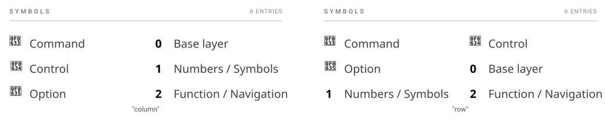
columns¶
| Type | Default |
|---|---|
integer | null |
null |
Forces the standalone symbols image to lay out at exactly this
many columns and shrinks the canvas to fit. null (the default)
lets the layout pick the largest column count that fits the canvas
budget — the behaviour used in per-layer and overview images. Has
no effect on the embedded legends inside per-layer / overview
images, only on the standalone symbols-only output.
strokes¶
Stroke widths for chrome lines that don't have their own dedicated block:
- The document border lives on
output.style.border.width(paired withborder.radius). - The layer connector path lives on
output.style.overview.layer_connector.width(paired withdot_spacing). - The layer indicator circle lives on
output.style.layer_indicator.width(paired withshow).
The two fields below follow the magnitude rule (< 1 proportion /
≥ 1 absolute / "N%" shorthand / null default).
chip_outline¶
| Type | Default | Base |
|---|---|---|
float | string | null |
null (→ 0.075% of doc width) |
doc width |
Stroke around macro and tap-dance chips — the rounded rectangle that carries the chip's icon and id (and, for named entries, extends across the name area on the right).
header_rule¶
| Type | Default | Base |
|---|---|---|
float | string | null |
null (→ 0.075% of doc width) |
doc width |
Stroke of every header rule — the line under each section title
strip (MACROS, TAP-DANCE, SYMBOLS) and the hairline below a
named-macro's chip-and-name header. A single value drives both so
the rule weights stay consistent across all sections.
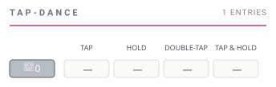
palette¶
Color tokens used throughout the rendered image.
Current schema:
output:
style:
palette:
neutral_color: <string>
text_color: <string>
key_label_color: <string>
background_color: <string>
border_color: <string>
macro_color: <string>
tap_dance_color: <string>
layers:
... # see output.style.palette.layers below
A worked example:
output:
style:
palette:
background_color: "#FFFFFF"
text_color: "#1F2933"
key_label_color: "#FFFFFF"
neutral_color: "#6F768B"
border_color: "#000000"
macro_color: "#89511C"
tap_dance_color: "#41687F"
layers:
- base_color: "#3366CC"
- base_color: "#CC6633"
Chrome colors¶
These apply to the document chrome (background, headings, borders) and to keys that don't get a layer-specific tint.
| Field | Default | What it tints |
|---|---|---|
background_color |
"white" |
The image background. |
text_color |
"black" |
Body text outside of keys (titles, legends, footer). |
key_label_color |
"white" |
Text on key faces (chosen for contrast against typically dark key backgrounds). |
neutral_color |
"#6F768B" |
Keys without a layer-specific color (most thumb cluster keys, transparent fall-throughs). |
border_color |
"black" |
Keyboard outer border and cluster outlines. |
macro_color |
"#89511C" |
Macro badges on keys and the title bar of the macros legend. |
tap_dance_color |
"#41687F" |
Tap-dance badges on keys and the title bar of the tap-dances legend. |
All accept any CSS color string ("red", "#3366CC", "rgb(51,102,204)",
"hsl(218 60% 50%)").
layers¶
| Type | Default |
|---|---|
list of LayerColor |
[] |
Per-layer color configurations. The list aligns by position with
keyboard.layers: the N-th palette entry colors the N-th keyboard
layer. If palette.layers is shorter than keyboard.layers, the extra
layers get auto-generated colors — so you can leave the list empty for
a quick start and fill it in later.
Current schema:
output:
style:
palette:
layers:
- base_color: <string>
color_index: <integer>
gradient:
- <string>
- ...
- ...
Each entry has these fields:
Auto-generated layer colors¶
When a layer has no explicit palette.layers entry, Skim derives a
base color from its index field. Sixteen visually-distinct colors
are produced from 8 hues × 2 lightness levels, walked in
bit-reversed order so consecutive indices always land on
maximally-distant hues. Layers 16–31 fill in the gaps with eight
intermediate hues at the same two lightness levels:
index |
Hue band | Lightness |
|---|---|---|
0–7 |
8 base hues, 45° apart (starting on green) | bright |
8–15 |
the same 8 base hues | dim |
16–23 |
8 intermediate hues (22.5° offset) | bright |
24–31 |
the same 8 intermediate hues | dim |
Why 45° between hues instead of 22.5°? Sixteen evenly-spaced hues sit
22.5° apart — narrow enough that several adjacent ones (especially in
the green region) blur together. Eight hues at 45° apart read as
decisively different colors, and the bright/dim alternation gives a
second axis of distinction so layers 0 and 8 (both green) still
look like separate layers.
The hue sequence for layers 0–7 lands on green, magenta, blue,
orange, yellow-green, red, purple, and yellow — eight slots that read
clearly as different colors. Layers 8–15 repeat the same hue walk
at the dim lightness; layers 16–23 and 24–31 do the same with
the intermediate hue set.
Saturation is capped at 0.65 so auto-generated colors share
the muted profile of the curated sample palettes shipped with Skim.
base_color¶
| Type | Default |
|---|---|
string |
— |
The primary CSS color for the layer. Doubles as the "anchor" Skim
plants in the auto-derived gradient when gradient is null (the
default), and as the layer's single-color reference everywhere a
gradient stop isn't appropriate (e.g. the auto-mouse-layer accent).
color_index¶
| Type | Default |
|---|---|
integer |
2 |
Position (0–5) where base_color lands inside the gradient. Used
in two places:
- When
gradientisnull— Skim auto-derives a 6-stop gradient anchoringbase_colorat this index. Stops below get progressively darker, stops above get progressively lighter. - When
gradientis set explicitly — Skim keeps the user-supplied tuple verbatim, but the renderer readsgradient[color_index]as the layer's "primary" color for indicator circles, layer badges, and the layer-trigger highlight on a source key.
gradient¶
| Type | Default |
|---|---|
6-tuple of CSS color strings, or null |
null |
Six colors that map to the six positions in a finger cluster (centre,
north, east, south, west, double-south). When null, Skim derives a
gradient automatically from base_color and color_index — six tints
ranging from very dark to very light, with base_color placed at
color_index.
output:
style:
palette:
layers:
# Layer 0: auto-derived gradient. Skim builds a 6-stop
# tuple from "#FF0000" anchored at color_index=2 (default),
# stepping darker / lighter to fill the surrounding stops.
- base_color: "#FF0000"
# Layer 1: explicit 6-stop gradient. Skim uses this tuple
# verbatim; ``color_index`` still picks which stop counts as
# the layer's "primary" color for indicators / badges.
- base_color: "#CC6633"
color_index: 2
gradient:
- "#CC6633"
- "#AA5522"
- "#884411"
- "#663300"
- "#442200"
- "#221100"